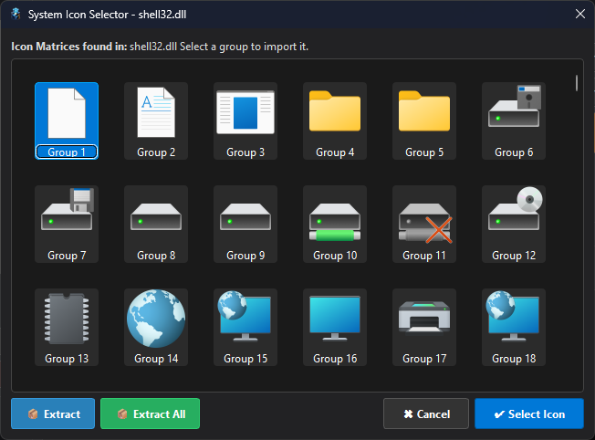
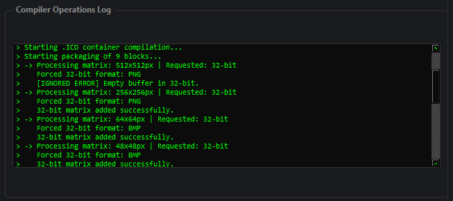

Cromak PNG To ICO Converter
Sistema Avançado de Compilação, Extração e Manipulação de cones
Versão: 1.3.1 (Build 2026.04)

Motor de Renderização Profissional
-
Compilação Multirresolução
Gere empacotamentos ICO verdadeiros com matrizes independentes indo do minúsculo 16x16 px até a altíssima fidelidade de 512x512 px dentro do mesmo arquivo.
-
Substituição Granular por Slots
Possui um design específico para uma resolução, mas outro diferente para resoluções menores? O Painel de Substituição permite carregar matrizes exclusivas para cada slot de resolução separadamente.
-
Compatibilidade Extrema (32, 8 e 4 Bits)
Abraça do Windows XP ao 11. Produza matrizes modernas em 32-bits (Cores Reais + Alpha), ou gere DIBs formatados em 8-bits (256 cores) e 4-bits para softwares antigos e retrocompatibilidade estrita.
-
Engenharia Reversa Nativa
Não tem a imagem original? O software navega dentro de executáveis (.EXE) e bibliotecas dinâmicas (.DLL) usando APIs do Kernel do Windows, extraindo ícones nativos diretamente do PE Header.


Internacionalização Nativa
Projetado para estúdios ao redor do mundo. Com um motor de i18n blindado, a interface gráfica, logs de compilação e painéis operacionais se adaptam em tempo real.
Galeria de Operação
Clique em qualquer captura de tela para inspecionar os módulos do conversor.
Dashboard Unificado
Interface Dark Mode desenvolvida em PyQt6, projetada para longas sessões de design sem fadiga visual.

Laboratório Visual
Importe via Arrastar e Soltar. Aplique enquadramentos Smart (Fill/Stretch), filtros de cor e adicione Badges (UAC, PRO) dinamicamente.
Perfis de Resolução (.icv)
Escolha exatamente quais pixels entrarão no arquivo final. Salve configurações inteiras e carregue-as posteriormente usando perfis personalizados.

Exportador Inteligente
Descompacte cones ou transforme imagens gigantes em lotes de PNGs em tamanhos perfeitamente formatados para desenvolvimento Web ou Mobile.

Console Integrado
Acompanhe o processo atômico do compilador. Veja a conversão bruta dos bytes, fallbacks do algoritmo e as validações do empacotador de estrutura.
Extrator PE Avançado
Semelhante ao Resource Hacker, leia bibliotecas do sistema operacional para resgatar conjuntos de ícones intocados da memória RAM.

Ajustes de Renderização
Escolha entre a alta suavidade do Lanczos ou precisão Nearest Neighbor (Pixel Art). Aplique Matização Anti-Halo para converter alfas transparentes em fundos sólidos com perfeição.

Segurança de Licença
Ativação de hardware atrelada ao processador e placa-mãe via chave CMKPIC, liberando funções do sistema de forma vitalícia.
🧠 Arquitetura Híbrida de Compactação
O Cromak PNG To ICO Converter utiliza um motor híbrido inteligente para otimização de espaço. Ao ativar a opção "Comprimir para Windows 7", resoluções de matrizes grandes (acima de 256x256) são preservadas usando fluxos de PNG embutidos sem perda de qualidade (lossless).
Para ícones menores de 128px e infraestruturas limitadas a 8 e 4-bits, o compilador automaticamente injeta estruturas de bitmaps primitivos (DIBs) via leitura hexadecimal bruta, garantindo 100% de reconhecimento pelos kernels mais defasados.
Requisitos do Sistema
- Sistema Operacional Windows 10, Windows 11 (64-bit)
- Processador Intel Core i3 ou AMD Ryzen 3 (Suporte a AVX recomendado)
- Memória RAM 4 GB de RAM (Dedicados ao carregamento Pillow)
- Armazenamento 50 MB para instalação base do pacote.
- Vídeo / API Qualquer GPU compatível com PyQt6 (Renderização 2D)